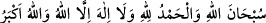

Sana yakınlık, sebepler ve vâsıtalarla elde edilemez,
Senin ezelî takdirinin lütfu olmadan elde edilemez.
Elde edilen her şeyin bir bedeli vardır,
Sen ise bedeli olmayansın, sana bedel bulunamaz.
Sonra bu âyet Allah Teâlâ’nın bu ümmete olan en büyük nîmetlerinden ve onların
diğer ümmetlerden üstün olduklarının en kuvvetli delillerindendir. Mi‘rac gecesinde
Hz. Peygamber (s.a.)’e vahy edilenler arasında şu ifâdeler de vardır: “Ey Muhammed!
Sen cennete girmeden diğer peygamberlerin cennete girmeleri haramdır. Yine senin
ümmetin cennete girmeden diğer ümmetlerin cennete girmeleri de haramdır.”[248] İşte
bu ümmet kendilerine tâzim için cennete girmekte böyle bir önceliğe sahip olunca, bu
değerli mükâfat konusunda da daha üstün ve daha çok paya sahip olurlar.
Sonra bu ümmetin fakirlerinin şan ve itibarları zenginlerden daha büyüktür. Enes b.
Mâlik (r.a.)’tan rivâyet edildiğine göre o şöyle demiştir. “Fakirler Hz. Peygamber
(s.a.)’e bir elçi gönderdiler. Gelen elçi “Ey Allâh’ın Rasûlü ben fakirlerin sana
elçisiyim” dedi. Rasûlullah (s.a.): “Hoş geldin. Sana ve huzurlarından geldiğin
fakirlere merhabalar. Sen benim kendilerini sevdiğim topluluğun yanından geldin”
buyurdu.
Elçi: “Ey Allâh’ın Rasûlü, fakirler sana şunu söylüyorlar: “Zenginler bütün hayırları
alıp götürdüler. Onlar hac yapıyorlar, biz buna muktedir değiliz. Onlar zekat ve sadaka
veriyorlar, biz buna da muktedir değiliz. Onlar köle âzâd ediyorlar, biz buna da
muktedir değiliz. Hastalandıkları zaman kendilerine bir ön hazırlık olarak mallarının
fazlalarını önden gönderiyorlar.” Bunun üzerine Hz. Peygamber (s.a.) şöyle buyurdu:
“Benden fakirlere şunu tebliğ et ki kim hâline sabreder ve ecrini Allah’tan beklerse
zenginlerin elde edemeyeceği üç haslet elde eder.
1. Cennette kırmızı yakuttan köşkler vardır. Cennet ehli onlara dünyâ ehlinin
gökteki yıldızlara baktıkları gibi bakarlar. Bu köşklere ancak fakir bir peygamber,
fakir bir şehit veya fakir bir mü’min girer.
2. Fakirler cennete zenginlerden yarım gün önce girerler. Bu ise beş yüz senedir.
3.
Fakir
ihlasla
“__WORD__
(Allah
noksanlardan
münezzehtir. Hamd Allâh’a mahsustur. Allah’tan başka ilah yoktur. Allah en
büyüktür)” dediği zaman, zengin de aynısını söylese bu sözün fazîletinde ve kat kat
sevab alma konusunda zengin fakire yetişemez. İsterse zengin bu sözle beraber on bin
dirhem infakta bulunsun. İyiliğe dâir bütün ameller hep böyledir.” Gelen elçi
fakirlerin yanına döndü bu durumu onlara haber verdi. Fakirler: “Yâ Rab biz buna razı
olduk.” dediler.[249] Bu rivâyeti, İmam Yâfiî Ravdu’r-rayâhîn’de zikretmiştir.
Ey Sâib! Çeşitli nîmetlere aldanmayız,
Kendi nasibimizi kerem sofrasından yeriz.